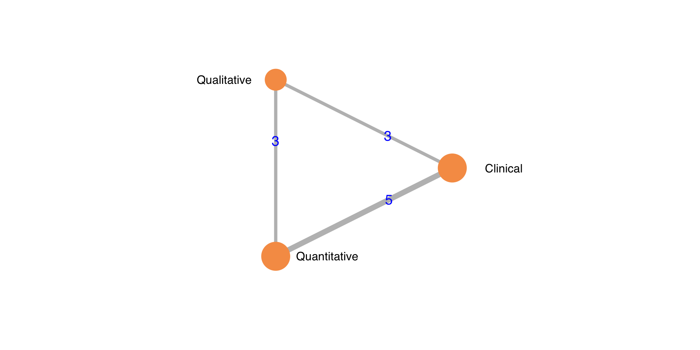
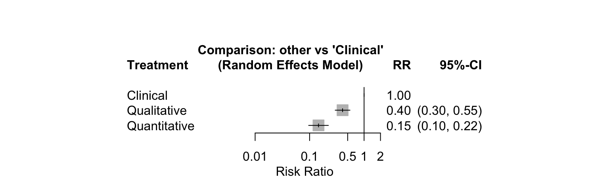
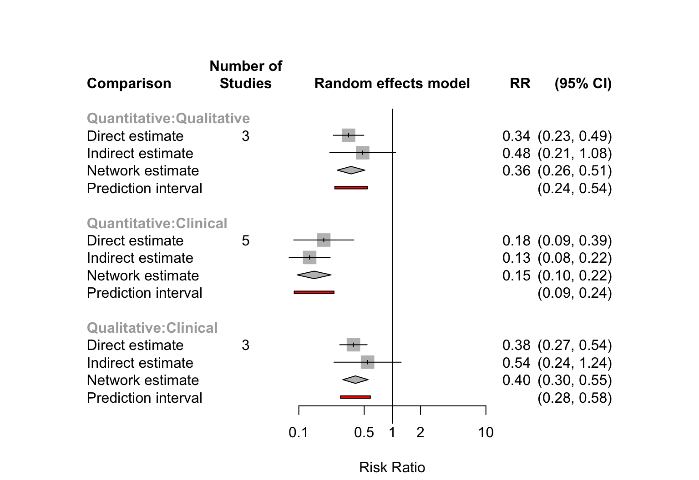
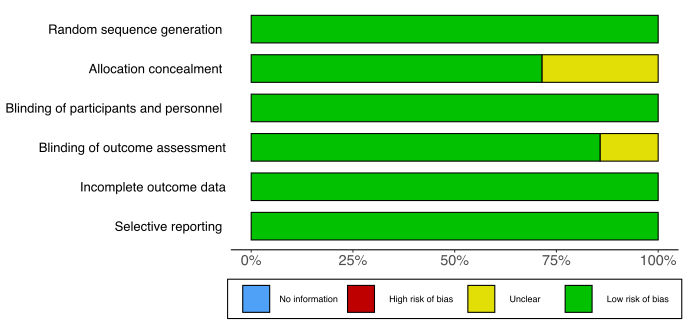
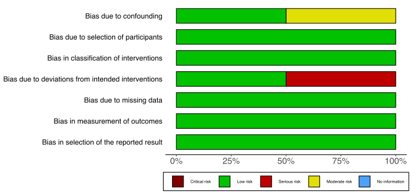

Monitoring and Patient Outcomes
19 January, 2022 (13:39)
Last updated: 2022-01-19
Checks: 6 1
Knit directory: nmb/
This reproducible R Markdown analysis was created with workflowr (version 1.7.0). The Checks tab describes the reproducibility checks that were applied when the results were created. The Past versions tab lists the development history.
The R Markdown file has unstaged changes. To know which version of the R Markdown file created these results, you’ll want to first commit it to the Git repo. If you’re still working on the analysis, you can ignore this warning. When you’re finished, you can run wflow_publish to commit the R Markdown file and build the HTML.
Great job! The global environment was empty. Objects defined in the global environment can affect the analysis in your R Markdown file in unknown ways. For reproduciblity it’s best to always run the code in an empty environment.
The command set.seed(20211025) was run prior to running the code in the R Markdown file. Setting a seed ensures that any results that rely on randomness, e.g. subsampling or permutations, are reproducible.
Great job! Recording the operating system, R version, and package versions is critical for reproducibility.
Nice! There were no cached chunks for this analysis, so you can be confident that you successfully produced the results during this run.
Great job! Using relative paths to the files within your workflowr project makes it easier to run your code on other machines.
Great! You are using Git for version control. Tracking code development and connecting the code version to the results is critical for reproducibility.
The results in this page were generated with repository version 5723533. See the Past versions tab to see a history of the changes made to the R Markdown and HTML files.
Note that you need to be careful to ensure that all relevant files for the analysis have been committed to Git prior to generating the results (you can use wflow_publish or wflow_git_commit). workflowr only checks the R Markdown file, but you know if there are other scripts or data files that it depends on. Below is the status of the Git repository when the results were generated:
Ignored files:
Ignored: .DS_Store
Ignored: .Rhistory
Ignored: .Rproj.user/
Ignored: _@@/
Ignored: analysis/index (original).Rmd
Ignored: analysis/kq2 (original 2).Rmd
Ignored: code/helpers.R
Ignored: code/rob_summary.R
Ignored: code/rob_traffic_light.R
Ignored: code/rob_traffic_light_mg.R
Ignored: used_files_dates.txt
Ignored: used_rob_files_dates.txt
Untracked files:
Untracked: .temp.lb
Untracked: analysis/.gitignore
Untracked: code/.gitignore
Untracked: code/misc_calcs.R
Untracked: code/rob_111921 (original).R
Untracked: code/rob_111921.R
Untracked: code/rob_summary_mg.R
Untracked: data/
Unstaged changes:
Modified: analysis/evidence_tables.Rmd
Modified: analysis/index.Rmd
Modified: analysis/kq1.Rmd
Modified: analysis/kq2.Rmd
Modified: analysis/kq3.Rmd
Modified: analysis/reversal.Rmd
Modified: code/readfiles_nmb_102721.R
Note that any generated files, e.g. HTML, png, CSS, etc., are not included in this status report because it is ok for generated content to have uncommitted changes.
These are the previous versions of the repository in which changes were made to the R Markdown (analysis/kq3.Rmd) and HTML (docs/kq3.html) files. If you’ve configured a remote Git repository (see ?wflow_git_remote), click on the hyperlinks in the table below to view the files as they were in that past version.
| File | Version | Author | Date | Message |
|---|---|---|---|---|
| html | 5723533 | Mark Grant | 2022-01-19 | updates robinsi |
| html | fb048af | Mark Grant | 2022-01-19 | update robinsi |
| html | 47269cc | Mark Grant | 2022-01-19 | misc updates rob tables |
| html | 9ca26fd | Mark Grant | 2022-01-19 | misc updates kq2 kq4 |
| Rmd | 9e20947 | Mark Grant | 2022-01-05 | delete erroneous footnote |
| html | 9e20947 | Mark Grant | 2022-01-05 | delete erroneous footnote |
| Rmd | 373e455 | Mark Grant | 2022-01-05 | fix headings, kq3 misc |
| html | 373e455 | Mark Grant | 2022-01-05 | fix headings, kq3 misc |
| Rmd | 800eaa5 | Mark Grant | 2022-01-03 | pulm complications table |
| html | 800eaa5 | Mark Grant | 2022-01-03 | pulm complications table |
| html | 29544c1 | Mark Grant | 2021-12-30 | change direction to auto header bar |
| html | 9d6453a | Mark Grant | 2021-12-30 | updates to kq2 kq3 |
| html | 9070e33 | Mark Grant | 2021-12-20 | updates kq2 kq3 |
Included Studies
Table 1. Number of included studies according to age and design.
| Age | Design | N |
|---|---|---|
| Adult | RCT | 10 |
| Quasi-experimental | 2 | |
| Prospective Cohort | 2 | |
| Retrospective Cohort | 1 | |
| Total | 15 | |
| RCT: randomized controlled trial. |
Design, centers, country, surgery
Table 2. Studies, design, size, centers, country, and surgery (see References for citations).
| ID | Study | Analyzed (N) | Centers | Countrya | Surgery |
|---|---|---|---|---|---|
| RCT | |||||
| 60 | Pedersen 1990 | 80 | 1 | Denmark | GI |
| 164 | Ueda 1991 | 90 | 1 | Japan | Gyn, GI |
| 664 | Mortensen 1995 | 40 | 1 | Denmark | Plastic |
| 697 | Shorten 1995 | 39 | 1 | USA | GI |
| 1045 | Fruergaard 1998 | 59 | 1 | Denmark | GI |
| 1489 | Gatke 2002 | 120 | 1 | Denmark | Gyn, Opth, ENT |
| 2071 | Murphy 2008 | 179 | 1 | USA | Gyn, Neuro, Ortho, Plastic, Urol |
| 2367 | Murphy 2011 | 150 | 1 | USA | Gyn, Gen, Neuro, Ortho, Plastic, Thor, Urol |
| 3105 | Adembesa 2018 | 168 | 1 | Kenyaa | Gyn, Gen, Opth, Oralmax, Ortho, ENT, Plastic, Urol |
| 3369 | Wardhana 2019 | 72 | 1 | Indiaa | Gyn, Urol, Abdominal |
| Quasi-Experimental | |||||
| 2703 | Todd 2014 | 197 | 1 | USA | Various |
| 3209 | Thilen 2018 | 78 | 2 | USA | Various, GI |
| Prospective Cohort | |||||
| 3140 | Goyal 2018 | 155 | 1 | Indiaa | Gyn, GI |
| 3303 | Kirmeier 2019 | 17150 | 88 | GI, ENT | |
| Retrospective Cohort | |||||
| 3270 | Domenech 2019 | 240 | 1 | Argentina | Various |
| RCT: randomized controlled trial. | |||||
| a Non very high Human Development Index country. | |||||
Anesthesia and reversal
Table 3. Anesthetics and reversal in included studies.
| Study | Anesthetic | Intub | Maint | Mean | Range | Neo | mg/kg | Sug | mg/kg | |
|---|---|---|---|---|---|---|---|---|---|---|
| RCT | ||||||||||
| Pedersen 1990 | TIVA/Inhaled | Panc/Vecu | × | × | (0.08-0.1) | × | 2.50 | |||
| Ueda 1991 | TIVA/Inhaled | Pan | × | (0.08-0.15) | × | 1.50 | ||||
| Mortensen 1995 | TIVA/Inhaled | Pan | × | × | (0.08-0.1) | × | 2.50 | |||
| Shorten 1995 | TIVA/Inhaled | Pan | × | (0.07-0.1) | × | 0.05 | ||||
| Fruergaard 1998 | TIVA/Inhaled | Pan | × | × | (0.08-0.1) | × | 2.50 | |||
| Gatke 2002 | TIVA/Inhaled | Roc | × | 0.60 | × | 0.03 | ||||
| Murphy 2008 | TIVA/Inhaled | Roc | × | × | (0.6-0.8) | × | 0.05 | |||
| Murphy 2011 | TIVA/Inhaled | Roc | × | × | (0.6-0.8) | × | 0.05 | |||
| Adembesa 2018 | TIVA/Inhaled | × | 0.05 | × | 0.05 | |||||
| Wardhana 2019 | TIVA/Inhaled | Roc | × | × | (0.06-0.08) | × | 0.05 | |||
| Quasi-Experimental | ||||||||||
| Todd 2014 | Various | × | ||||||||
| Thilen 2018 | Vec | × | × | 0.81 | × | 0.04 | ||||
| Prospective Cohort | ||||||||||
| Goyal 2018 | TIVA/Inhaled | Roc | × | × | 0.50 | × | ||||
| Kirmeier 2019 | Various | × | × | |||||||
| Retrospective Cohort | ||||||||||
| Domenech 2019 | Various | × | 0.03 | × | 3.20 | |||||
| RCT: randomized controlled trial; Panc: pancuronium; Vecu: vecuronium; Roc: rocuronium, Cis: cisatracurium; TIVA: total intravenous anesthesia; Intub: intubation; Maint: maintenance; Neo: neostigmine; Sug: sugammadex. | ||||||||||
Outcomes
Residual Neuromuscular Block (TOFR)
Incidence
Table 4. Results from studies reporting residual neuromuscular blockade. (Time-related outcomes—time from extubation to TOFR 0.9—reported in only 2 studies and not summarized).
| Study | Monitoring | N | N (%) | 0% → 100% | TOFR | Placea | OR (95% CI)b |
|---|---|---|---|---|---|---|---|
| RCT | |||||||
| Ueda 1991 | Clinical | 30 | 25 (83) | <0.7 | PACU | 0.01 (0.00-0.08) | |
| Manual TOF | 30 | 17 (57) | 0.05 (0.01-0.27) | ||||
| Manual TOF/DBS | 30 | 2 (7) | |||||
| Mortensen 1995 | Clinical | 21 | 7 (33) | <0.7 | OR | 0.11 (0.01-1.01) | |
| AMG | 19 | 1 (5) | |||||
| Shorten 1995 | Clinical | 19 | 9 (47) | <0.7 | PACU | 0.20 (0.04-0.90) | |
| PNS/Clinical | 20 | 3 (15) | |||||
| Fruergaard 1998 | Clinical | 30 | 17 (57) | <0.7 | OR | 0.24 (0.08-0.74) | |
| PNS | 29 | 7 (24) | |||||
| Gatke 2002 | Clinical | 60 | 10 (17) | <0.8 | OR | 0.17 (0.04-0.82) | |
| AMG | 60 | 2 (3) | |||||
| Murphy 2008 | PNS | 90 | 27 (30) | <0.9 | PACU | 0.11 (0.04-0.33) | |
| AMG | 89 | 4 (4) | |||||
| Murphy 2011 | PNS/Clinical | 74 | 37 (50) | <0.9 | PACU | 0.17 (0.08-0.37) | |
| AMG | 76 | 11 (14) | |||||
| Wardhana 2019 | Clinical | 36 | 6 (17) | <0.9 | PACU | 0.14 (0.02-1.25) | |
| AMG | 36 | 1 (3) | |||||
| Quasi-Experimental | |||||||
| Thilen 2018 | PNS | 38 | 12 (32) | <0.7 | PACU | 0.05 (0.01-0.44) | |
| AMG | 41 | 1 (3) | |||||
| Todd 2014 | PNS/Clinical | 96 | 30 (31) | <0.9 | PACU | 0.41 (0.20-0.82) | |
| EMG | 96 | 15 (15) | |||||
| Retrospective Cohort | |||||||
| Domenech 2019 | Clinical | 177 | 57 (32) | <0.9 | PACU | 0.03 (0.00-0.25) | |
| AMG | 63 | 1 (2) | |||||
| RNMB: residual neuromuscular block; OR: odds ratio; CI: confidence interval; RCT: randomized controlled trial; TOFR: train of four ratio; DBS: double burst stimulation; PNS: peripheral nerve stimulator; AMG: acceleromyography; EMG: electromyography; OR: operating room; nl: normalized. | |||||||
| a PACU if desginated as PACU or recovery, OR if designated as such or as post-extubation. | |||||||
| b Odds ratio comparing the last monitoring arm (lowest incidence) to the prior. For studies reporting results for >1 threshold, only those for the highest are shown. | |||||||
Pooled TOFR <0.9 (RCTs)
Network Plot
Figure 1. Network plot — RCTs reporting residual neuromuscular block (TOFR <0.9).

| Version | Author | Date |
|---|---|---|
| 9ca26fd | Mark Grant | 2022-01-19 |
Forest Plot
Figure 2. Pooled residual neuromuscular block (TOFR <0.9) from randomized trials comparing quantitative, qualitative, and clinical monitoring (network meta-analysis).

| Version | Author | Date |
|---|---|---|
| 9ca26fd | Mark Grant | 2022-01-19 |
I2 = 30% (95% CI 0%, 66%)
League Table (all comparisons)
Table 5. League table of odds ratios comparing upper left to lower right. Network comparisons in lower left triangle and direct comparisons in upper right.
| Quantitative | 0.19 (0.10, 0.37) | 0.10 (0.04, 0.30) |
| 0.24 (0.13, 0.43) | Qualitative | 0.16 (0.07, 0.37) |
| 0.06 (0.03, 0.12) | 0.24 (0.12, 0.47) | Clinical |
Node Splitting Forest Plot
Figure 3. Comparison of direct and indirect evidence (network meta-analysis).

| Version | Author | Date |
|---|---|---|
| 9ca26fd | Mark Grant | 2022-01-19 |
Mean TOFR
Table 6. Results from studies reporting mean TOFR at extubation or in the PACU.
| Study | Monitoring | N | M (SD) | Med (range) | M (SD) | Med [Range] {IQR} | Note |
|---|---|---|---|---|---|---|---|
| RCT | |||||||
| Pedersen 1990 | Clinical (pan) | 20 | 0.63 {0.29-0.95} | ||||
| Clinical (vec) | 20 | 0.79 {0.10-0.97} | vs. pancuronium p<.01 | ||||
| PNS (pan) | 20 | 0.66 {0.06-0.90} | |||||
| PNS (vec) | 20 | 0.75 {0.33-0.96} | vs. pancuronium p<.01 | ||||
| Ueda 1991 | Clinical | 30 | 0.53 (0.19) | [0.20-0.92] | |||
| Manual TOF | 30 | 0.67 (0.11) | [0.46-0.94] | vs. clinical p<.05 | |||
| Manual TOF/DBS | 30 | 0.81 (0.08) | [0.68-0.96] | vs. clinical p<.001 | |||
| Mortensen 1995 | Clinical | 21 | 0.65 [0.26-0.96] | ||||
| AMG | 19 | 0.76 [0.49-0.90] | difference not detected | ||||
| Shorten 1995 | Clinical | 19 | 0.72 (0.28) | ||||
| PNS/Clinical | 20 | 0.88 (0.18) | vs. clinical p<.05 | ||||
| Fruergaard 1998 | Clinical | 30 | 0.68 (0.20) | [0.24-0.98] | |||
| PNS | 29 | 0.78 (0.12) | [0.50-0.98] | vs. clinical p=.02 | |||
| Murphy 2011 | PNS/Clinical | 74 | 0.88 [0.33-1.26] | ||||
| AMG | 76 | 0.98 [0.48-1.28] | vs. clinical p=.004 | ||||
| Wardhana 2019 | Clinical | 36 | 0.93 (0.07) | ||||
| AMG | 36 | 0.95 (0.03) | vs. clinical p=.05 | ||||
| Quasi-Experimental | |||||||
| Todd 2014 | PNS/Clinical | 96 | 0.90 (0.18) | 0.94 {0.87-0.99} | |||
| EMG | 96 | 0.95 (0.08) | 0.98 {0.94-1.00} | vs. clinical p=.008 | |||
| M: mean; SD: standard deviation; Med: median; vec: vecuronium; pan: pancuronium; RCT: randomized controlled trial; DBS: double burst stimulation; TOFR: train of four ratio; PNS: peripheral nerve stimulator; AMG: acceleromyography; EMG: electromyography; PACU: post-anesthesia care unit. | |||||||
Pulmonary complications
Table 7. Results of studies reporting pulmonary complications.
| Study | Monitoring | N | N (%) | 0% → 100% | OR (95% CI)a | Note |
|---|---|---|---|---|---|---|
| Reintubation | ||||||
| RCT | ||||||
| Adembesa 2018 | Clinical | 84 | 0 (0.0) | |||
| AMG | 84 | 0 (0.0) | — | |||
| Quasi-Experimental | ||||||
| Thilen 2018 | PNS | 38 | 0 (0.0) | |||
| AMG | 41 | 1 (2.4) | 2.85 (0.11-72.16) | |||
| Prospective Cohort | ||||||
| Goyal 2018 | Clinical | 66 | 0 (0.0) | |||
| AMG | 89 | 0 (0.0) | — | |||
| Upper Airway Obstruction | ||||||
| RCT | ||||||
| Wardhana 2019 | Clinical | 36 | 0 (0.0) | |||
| AMG | 36 | 0 (0.0) | — | |||
| Respiratory Failure | ||||||
| Quasi-Experimental | ||||||
| Thilen 2018 | PNS | 38 | 1 (2.6) | |||
| AMG | 41 | 2 (4.9) | 1.90 (0.17-21.82) | |||
| Hypoxia | ||||||
| RCT | ||||||
| Murphy 2008 | PNS | 90 | 9 (10.0) | <90% in PACU | ||
| AMG | 89 | 0 (0.0) | 0.05 (0.00-0.84) | <90% in PACU | ||
| Adembesa 2018 | Clinical | 84 | 16 (19.0) | ≤ 93% in PACU | ||
| AMG | 84 | 5 (6.0) | 0.27 (0.09-0.77) | ≤ 93% in PACU | ||
| Wardhana 2019 | Clinical | 36 | 0 (0.0) | pO2 unspecified | ||
| AMG | 36 | 0 (0.0) | — | pO2 unspecified | ||
| Brochospasm | ||||||
| RCT | ||||||
| Wardhana 2019 | Clinical | 36 | 0 (0.0) | Distress/bronchospasm | ||
| AMG | 36 | 1 (2.8) | 3.08 (0.12-78.27) | Distress/bronchospasm | ||
| Pneumonia | ||||||
| Prospective Cohort | ||||||
| Goyal 2018 | Clinical | 66 | 2 (3.0) | at 48hr postop | ||
| AMG | 89 | 0 (0.0) | 0.14 (0.01-3.05) | at 48hr postop | ||
| Pulmonary | ||||||
| Prospective Cohort | ||||||
| Kirmeier 2019 | PNS/Clinical | 2686 | 292 (10.9) | 1-28d postopc | ||
| Quantitative | 4182 | 441 (10.5) | 1.07 (0.90-1.29)b | 1-28d postopc | ||
| Kirmeier 2019 | None | 9927 | 676 (6.8) | 1-28d postopc | ||
| Any NMM | 7223 | 765 (10.6) | 1.31 (1.15-1.49)b | 1-28d postopc | ||
| OR: odds ratio; CI: confidence interval; RCT: randomized controlled trial; PNS: peripheral nerve stimulator; AMG: acceleromyography; NMM: neuromuscular monitoring. | ||||||
| a OR comparing the last arm to the prior one. Where 0 events in an arm, continuity correction used to estimate OR. | ||||||
| b Adjusted for potential confounders. | ||||||
| c Respiratory failure (includes hypoxia), suspected pulmonary infection or infiltrates, atelectasis, aspiration pneumonitis, bronchospasm, or pulmonary edema. | ||||||
Study/Participant Detail
Study Characteristics
Adult Studies
Table 8. Characteristics of studies including only adults.
| Study | Dates | Country | N | Pilot | Setting | Gen | Reg | Type of Surgery | Registered |
|---|---|---|---|---|---|---|---|---|---|
| RCT | |||||||||
| Pedersen 1990 | DNK | 80 | Hosp | • | GI | ||||
| Ueda 1991 | JPN | 90 | Hosp | • | Gyn, GI | ||||
| Mortensen 1995 | DNK | 40 | Hosp | • | Plastic | ||||
| Shorten 1995 | USA | 39 | Hosp | • | GI | ||||
| Fruergaard 1998 | DNK | 60 | Hosp | • | GI | ||||
| Gatke 2002 | DNK | 120 | Hosp | • | Gyn, Opth, ENT | ||||
| Murphy 2008 | USA | 185 | Hosp | • | Gyn, Neuro, Ortho, Plastic, Urol | ||||
| Murphy 2011 | 10/06-10/10 | USA | 150 | Hosp | • | Gyn, Gen, Neuro, Ortho, Plastic, Thor, Urol | |||
| Adembesa 2018 | KENa | 168 | Hosp | • | Gyn, Gen, Opth, Oralmax, Ortho, ENT, Plastic, Urol | • | |||
| Wardhana 2019 | INDa | 80 | Hosp | • | Gyn, Urol, Abdom | • | |||
| Quasi-Experimental | |||||||||
| Todd 2014 | 08/11-12/12 | USA | 197 | Hosp | • | Various | |||
| Thilen 2018 | 01/16-06/16 | USA | 88 | Hosp | • | Various, GI | • | ||
| Prospective Cohort | |||||||||
| Goyal 2018 | 03/14-02/17 | INDa | 190 | Hosp | • | Gyn, GI | |||
| Kirmeier 2019 | 06/14-04/15 | 17150 | Hosp | • | GI, ENT | • | |||
| Retrospective Cohort | |||||||||
| Domenech 2019 | 06/15-12/15 | ARG | 240 | Hosp | • | Various | |||
| Gen: general; Reg: regional; Sed: sedation; Hosp: hospital; Amb: ambulatory; GI: gastrointestinal; Ortho: orthopedic; Abdom: abdominal; ENT: otolaryngology (ear, nose, and throat); Gyn: gynecologic; Urol: urologic; Neuro: neurological; Hep: hepatic; Thor: thoracic; Oralmax: oral maxillofacial | |||||||||
| a Non very high Human Development Index country. | |||||||||
Patient Characteristics
Adult Studies
Table 9. Patient characteristics in studies including only adults.
| Study | N | 1 | 2 | 3 | 4 | M Med | (%) | W | B | A | M Med | Card | Renal | Pulm | Hep | DM | Neur |
|---|---|---|---|---|---|---|---|---|---|---|---|---|---|---|---|---|---|
| RCT | |||||||||||||||||
| Pedersen 1990 | 80 | 68 | 34 | 0 | 0 | ||||||||||||
| Ueda 1991 | × | × | 90 | 51 | 57 | 0 | |||||||||||
| Mortensen 1995 | × | 40 | 40 | 80 | 0 | 0 | 0 | ||||||||||
| Shorten 1995 | × | × | 39 | 43 | 95 | 0 | |||||||||||
| Fruergaard 1998 | × | × | × | 59 | 49 | 56 | 0 | ||||||||||
| Gatke 2002 | × | × | × | 120 | 39 | 18 | 0 | ||||||||||
| Murphy 2008 | × | × | × | 179 | 47 | 49 | 3 | 10 | 0 | 9 | |||||||
| Murphy 2011 | × | × | × | 150 | 53 | 46 | 0 | 0 | 0 | ||||||||
| Adembesa 2018 | × | × | 168 | 37 | 56 | 100 | 25 | 0 | 0 | 0 | 0 | ||||||
| Wardhana 2019 | × | × | 72 | 42 | 78 | 23 | 0 | 0 | |||||||||
| Quasi-Experimental | |||||||||||||||||
| Todd 2014 | 192 | ||||||||||||||||
| Thilen 2018 | 79 | ||||||||||||||||
| Prospective Cohort | |||||||||||||||||
| Goyal 2018 | × | 155 | 38 | 55 | 100 | ||||||||||||
| Kirmeier 2019 | × | × | × | 6868 | 56 | 53 | 27 | 9 | 12 | 5 | 12 | 12 | |||||
| Retrospective Cohort | |||||||||||||||||
| Domenech 2019 | × | × | × | 240 | 54 | 63 | 27 | ||||||||||
| M: mean; Med: median; Card: cardiac; Pulm: pulmonary; Hep: hepatic; DM: diabetes mellitus; Neuro: neurological: RCT: randomized controlled trial. | |||||||||||||||||
| a Empty cells indicate no information in publication. | |||||||||||||||||
Funding and Conflict of Interest
Adult Studies
Table 10. Fundinga and reported conflict of interest in studies including only adults.
| Study | Pub | Pub/Ind | Ind | None | NRa | Description | No | Yes | NRa | Description |
|---|---|---|---|---|---|---|---|---|---|---|
| RCT | ||||||||||
| Pedersen 1990 | × | Danish Medical Research Council, the Danish Heart Foundation, the Lily Benthine Lund Foundation, the Director I. Henriksen Foundation, the Danish Society of Anaesthesiology Foundation | × | |||||||
| Ueda 1991 | × | × | ||||||||
| Mortensen 1995 | × | × | ||||||||
| Shorten 1995 | × | × | ||||||||
| Fruergaard 1998 | × | × | ||||||||
| Gatke 2002 | × | Organon Teknika | × | |||||||
| Murphy 2008 | × | × | Consultancy fee from Organon, Inc. | |||||||
| Murphy 2011 | × | NorthShore University HealthSystem | × | Murphy on advisory board of MSD | ||||||
| Adembesa 2018 | × | × | ||||||||
| Wardhana 2019 | × | × | ||||||||
| Quasi-Experimental | ||||||||||
| Todd 2014 | × | × | ||||||||
| Thilen 2018 | × | University of Washington | × | |||||||
| Prospective Cohort | ||||||||||
| Goyal 2018 | × | All India Institute of Medical Sciences research grant | × | |||||||
| Kirmeier 2019 | × | European Soc of Anaesthesiology | × | |||||||
| Retrospective Cohort | ||||||||||
| Domenech 2019 | × | × | GD: consultant for MSD | |||||||
| Note: | ||||||||||
| Pub: public, Ind: industry; NR: not reported; MSD: Merck, Sharp, and Dohme (funded 23 (22%) of RCTs and 26 (19%) of studies listed). | ||||||||||
| a Not reported meaning no mention in publication of funding source or author conflicts of interest. | ||||||||||
Risk of Bias
RCTs Clinical Outcomes
Figure 4. Summary risk of bias appraisal for included RCTs reporting RNMB.

Figure 5. Individual study risk of bias appraisal for reporting RNMB.

Nonrandomized Studies of Interventions
Figure 6. Summary risk of bias appraisal for included nonrandomized studies reporting RNMB.

Figure 7. Individual study risk of bias appraisal for nonrandomized studies reporting RNMB.
References
R version 4.1.2 (2021-11-01)
Platform: x86_64-apple-darwin17.0 (64-bit)
Running under: macOS Big Sur 10.16
Matrix products: default
BLAS: /Library/Frameworks/R.framework/Versions/4.1/Resources/lib/libRblas.0.dylib
LAPACK: /Library/Frameworks/R.framework/Versions/4.1/Resources/lib/libRlapack.dylib
locale:
[1] en_US.UTF-8/en_US.UTF-8/en_US.UTF-8/C/en_US.UTF-8/en_US.UTF-8
attached base packages:
[1] stats graphics grDevices utils datasets methods base
other attached packages:
[1] netmeta_2.0-1 meta_5.1-1 formattable_0.2.1 naniar_0.6.1
[5] forcats_0.5.1 stringr_1.4.0 dplyr_1.0.7 purrr_0.3.4
[9] readr_2.1.1 tidyr_1.1.4 tibble_3.1.6 ggplot2_3.3.5
[13] tidyverse_1.3.1 Cairo_1.5-14 countrycode_1.3.0 janitor_2.1.0
[17] kableExtra_1.3.4
loaded via a namespace (and not attached):
[1] minqa_1.2.4 colorspace_2.0-2 ellipsis_0.3.2
[4] visdat_0.5.3 rprojroot_2.0.2 htmlTable_2.4.0
[7] snakecase_0.11.0 base64enc_0.1-3 fs_1.5.2
[10] rstudioapi_0.13.0-9000 bit64_4.0.5 fansi_1.0.2
[13] lubridate_1.8.0 mathjaxr_1.4-0 xml2_1.3.3
[16] splines_4.1.2 extrafont_0.17 knitr_1.37
[19] Formula_1.2-4 jsonlite_1.7.2 workflowr_1.7.0
[22] nloptr_1.2.2.3 broom_0.7.11 Rttf2pt1_1.3.9
[25] cluster_2.1.2 dbplyr_2.1.1 png_0.1-7
[28] rjags_4-12 compiler_4.1.2 httr_1.4.2
[31] backports_1.4.1 assertthat_0.2.1 Matrix_1.4-0
[34] fastmap_1.1.0 cli_3.1.0 later_1.3.0
[37] htmltools_0.5.2 tools_4.1.2 igraph_1.2.11
[40] coda_0.19-4 gtable_0.3.0 glue_1.6.0
[43] Rcpp_1.0.8 cellranger_1.1.0 jquerylib_0.1.4
[46] vctrs_0.3.8 svglite_2.0.0 nlme_3.1-155
[49] extrafontdb_1.0 xfun_0.29 rbibutils_2.2.7
[52] lme4_1.1-27.1 rvest_1.0.2 CompQuadForm_1.4.3
[55] lifecycle_1.0.1 MASS_7.3-55 scales_1.1.1
[58] vroom_1.5.7 hms_1.1.1 promises_1.2.0.1
[61] parallel_4.1.2 metafor_3.0-2 RColorBrewer_1.1-2
[64] yaml_2.2.1 gridExtra_2.3 sass_0.4.0
[67] rpart_4.1-15 latticeExtra_0.6-29 stringi_1.7.6
[70] highr_0.9 checkmate_2.0.0 boot_1.3-28
[73] Rdpack_2.1.3 rlang_0.4.12 pkgconfig_2.0.3
[76] systemfonts_1.0.3 evaluate_0.14 lattice_0.20-45
[79] htmlwidgets_1.5.4 bit_4.0.4 tidyselect_1.1.1
[82] plyr_1.8.6 magrittr_2.0.1 R6_2.5.1
[85] Hmisc_4.6-0 generics_0.1.1 DBI_1.1.2
[88] foreign_0.8-82 pillar_1.6.4 haven_2.4.3
[91] whisker_0.4 withr_2.4.3 nnet_7.3-17
[94] survival_3.2-13 abind_1.4-5 modelr_0.1.8
[97] crayon_1.4.2 utf8_1.2.2 tzdb_0.2.0
[100] rmarkdown_2.11 jpeg_0.1-9 grid_4.1.2
[103] readxl_1.3.1 BUGSnet_1.0.4 data.table_1.14.2
[106] git2r_0.29.0 reprex_2.0.1 digest_0.6.29
[109] webshot_0.5.2 httpuv_1.6.5 munsell_0.5.0
[112] viridisLite_0.4.0 bslib_0.3.1 magic_1.5-9